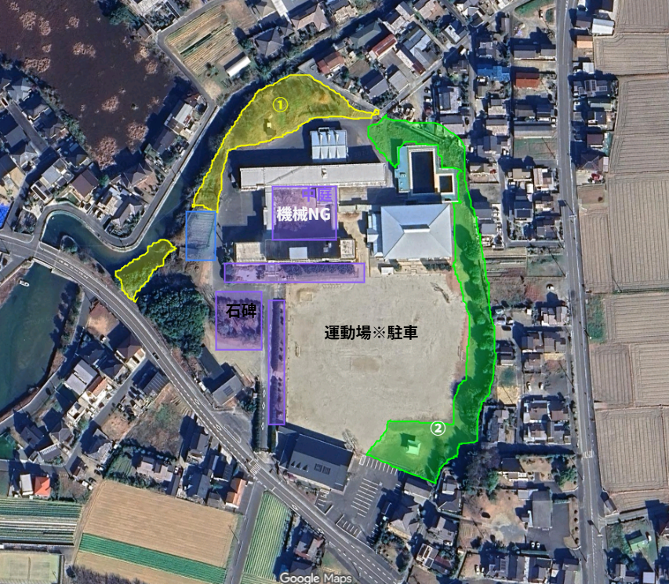

5月23日（土）
|8:00〜10:00 集合 7:45
|予備日：5月30日（土）
参加・機材 集計
5/23（土）
参加人数
参加人数
—名
目標：130名規模
5/30（土）
予備日参加可
予備日参加可
—名
目標：130名規模
刈払機
持込台数
持込台数
—台
目標：20台規模
軽トラック
持込台数
持込台数
—台
目標：15台規模
作業エリア配置図

エリア①（黄）刈払機担当
トラクターが入れない植え込み周辺・柵際・境界線際を先行実施。
刈り取った草は軽トラ・ダンプが回収します。
エリア②（緑）刈払機担当
トラクターが入れない植え込み周辺・柵際・境界線際を先行実施。
刈り取った草は軽トラ・ダンプが回収します。
赤エリア 3tダンプ メイン集草
3tダンプカーがメインで集草を担当するエリアです。
刈払機部隊が先行した後、広範囲の草を効率よく回収・搬出します。
🟠 軽トラ 配車ポイントで集草
地図上のオレンジ丸の位置に配車して集草・積込を担当。
刈り取った草を青エリア（草捨て場）までピストン輸送してください。
紫エリア 手鎌・自走式草刈機担当
🌟 水崎勝則さんの自走式草刈機で広範囲を先行実施。
植え込み付近・細かな箇所は手鎌部隊が丁寧に仕上げ。
中庭エリアは親子参加の方を中心に手作業で担当します。
青エリア 草捨て場（搬出先）
軽トラ・3tダンプの草の搬出先（草捨て場）です。
ピストン輸送でどんどん運び込んでください。
💪 機械なしのお父様！ 集草・積込担当
刈払機や重機がなくても大丈夫！
刈払機エリアの集草担当として、刈り取った草を軽トラやダンプカーにバンバン積む頼もしい作業をお願いします！
体力勝負のこの役割、皆さんのパワーが作業効率を大きく左右します。ぜひ積極的にご参加ください💪
📢 このページは保護者の方向けです
このページはGoogleのデータ配信サービス（Google Apps Script）を利用して集計データを表示しています。
そのため、以下の端末・環境では「データの取得に失敗しました」と表示される場合があります：
・Googleファミリーリンクで管理されているお子様のスマートフォン
・13歳未満の設定がされているGoogleアカウントでログイン中のブラウザ
・学校が管理するアカウントでログイン中の端末
その場合は、保護者の方のスマートフォンやPCでご覧ください。
そのため、以下の端末・環境では「データの取得に失敗しました」と表示される場合があります：
・Googleファミリーリンクで管理されているお子様のスマートフォン
・13歳未満の設定がされているGoogleアカウントでログイン中のブラウザ
・学校が管理するアカウントでログイン中の端末
その場合は、保護者の方のスマートフォンやPCでご覧ください。
お問い合わせ
引津小学校 大規模環境美化作業 実行委員会（あおぞら会準備事務局）
事務局：引津小学校 教頭 / ☎ 092-328-2207
事務局：引津小学校 教頭 / ☎ 092-328-2207